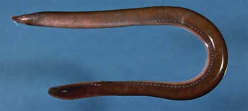
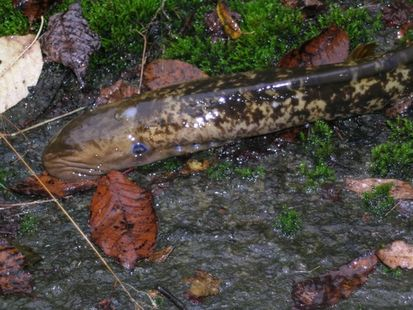

Рассмотрим некоторых представителей этой категории.
Австралийская минога.
Единственный вид бесчелюстных семейства геотриевых (Geotriidae) отряда миногообразных. Длина тела от 45 до 50 см, максимальная длина 62 см. Распространена в Южном Гемпшире в Южном полушарии, на юге Австралии и у Новой Зеландии, Чили и Аргентины. Первые четыре года живут как пескоройки. Во взрослом состоянии живут в открытом море, где питаются как паразиты рыб. На нерест заходят в реки, где проводят до 18 месяцев созревания перед нерестом. Погибают после нереста.
Атлантическая миксина.
Атлантическая миксина, или европейская миксина(лат. Myxine glutinosa) — вид бесчелюстных из семейства миксиновых. Атлантическая миксина обитает в восточной Атлантике от западной части Средиземного моря и Португалии до Северного моря, Скагеррака, Каттегата и Варангер-фьорда. В западной Атлантике — от острова Баффинова Земля на юг до Северной Каролины. Длина тела достигает 76 см. Недоразвитые глаза скрыты под кожей. Спинного плавника нет. Вокруг рта расположено 6 усиков. На боковых сторонах тела одна жаберная щель. На поверхности тела в общей сложности от 88 до 102 пор, из которых сочится слизь. Атлантическая миксина — хищник, она выедает внутренности и мышцы у ослабевших рыб, вгрызаясь в жертву с помощью мощного языка с роговыми зубцами.

Морская минога.
Морская минога(лат. Petromyzon marinus) — вид бесчелюстных из отряда миногообразных, самый крупный представитель отряда. Выделяется в монотипический род морских миног (Petromyzon). Крупная проходная, паразитическая минога, достигает длины 120 см и массы 2,3 кг.
